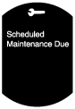
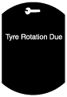
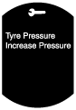
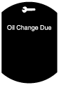

หน้าจอการบำรุงรักษา
id092200036800
รายละเอียด
• เมื่อเข้าใกล้ระยะเวลาการบำรุงรักษาที่กำหนดไว้ล่วงหน้า หน้าจอการบำรุงรักษาจะแสดงข้อความบนหน้าจอ LCD ในแผงหน้าปัดเพื่อแสดงข้อมูลให้ผู้ขับขี่ทราบ
ฟังก์ชั่น/โครงสร้าง
• หน้าจอการบำรุงรักษาประกอบด้วยรายการต่อไปนี้
• การตั้งค่าการบำรุงรักษาสำหรับการบำรุงรักษาตามกำหนดการ การสลับยาง แรงดันลมยาง และน้ำมันเครื่องยนต์ นอกจากนี้ยังสามารถตั้งค่าการแสดงผล/ไม่แสดงผลการบำรุงรักษาได้ตามความต้องการของผู้ใช้อีกด้วย ดูที่คู่มือซ่อมสำหรับขั้นตอนการตั้งค่า
• แผงหน้าปัดจะจัดเก็บข้อมูลการตั้งค่าหน้าจอการบำรุงรักษา ช่วงเวลาที่ผ่านไป และระยะการเดินทางนับตั้งแต่มีการตั้งค่า ข้อมูลที่จัดเก็บจะไม่ถูกลบออก ถึงแม้จะมีการถอดแบตเตอรี่ออกก็ตาม
-
หมายเหตุ
-
• ถ้ามีการเปลี่ยนแผงหน้าปัด หน้าจอการบำรุงรักษาจะใช้ค่าที่กำหนดเริ่มต้น เนื่องจากระบบไม่สามารถเขียนข้อมูลการตั้งค่าการตรวจสอบการบำรุงรักษาที่เก็บบันทึกไว้ในแผงหน้าปัดเดิมไปยังแผงหน้าปัดใหม่ได้ ก่อนทำการเปลี่ยนแผงหน้าปัด ควรอธิบายให้ลูกค้าทราบว่าหน้าจอการบำรุงรักษาจะถูกรีเซ็ตเป็นการตั้งค่าเริ่มต้น
ตารางหน้าจอการบำรุงรักษา
|
รายการ
|
การแสดงผลบนหน้าจอ
|
ลำดับการแสดงผลตามลำดับความสำคัญก่อนหลัง
|
ชุดที่เกี่ยวข้อง
|
|
การบำรุงรักษาตามกำหนดการ
|
 |
1
|
แผงหน้าปัด (ข้อมูลการตั้งค่าหน้าจอการบำรุงรักษา ระยะการเดินทางที่จัดเก็บ และช่วงเวลาที่ผ่านไป หลังการตั้งค่าหน้าจอการบำรุงรักษา)
|
|
การสลับยาง
|
 |
2
|
|
แรงดันลมยาง
|
 |
3
|
|
น้ำมันเครื่อง
|
 |
4
|
การทำงาน
• หากพบสภาวะการแสดงผลใดต่อไปนี้ระหว่างระยะเวลาการบำรุงรักษาที่กำหนดไว้ล่วงหน้า หน้าจอการบำรุงรักษาจะแสดงข้อความขึ้น
สภาวะการแสดงผล
-
― การตั้งค่าวัน: จำนวนวันที่เหลือคือ 15 วันหรือน้อยกว่า
― การตั้งค่าระยะทาง: ระยะทางที่เหลือคือ 500 km/250 mile
• แผงหน้าปัดจะแสดงข้อความที่ตรงกับสภาวะการแสดงผล เมื่อเวลาผ่านไป 0.8 วินาที หลังจากบิดสวิตช์สตาร์ทไปที่ ON (เครื่องยนต์ไม่ทำงานหรือทำงาน)
• หากพบสภาวะการแสดงผลหลายรายการ แผงหน้าปัดจะแสดงข้อความที่รอบเวลาประมาณ 5 วินาทีตามลำดับการระบุความสำคัญก่อนหลัง (ดูที่ตารางหน้าจอการบำรุงรักษา)
• เมื่อได้รับสัญญาณการทำงานของปุ่ม INFO บนสวิตช์ที่พวงมาลัยผ่านสัญญาณระบบ CAN จากชุดเปิด/ปิดการทำงานขณะที่ข้อความปรากฏ แผงหน้าปัดจะลบข้อความที่ปรากฏขึ้นเป็นเวลาผ่านไปแล้ว 2 วินาทีขึ้นไป
-
หมายเหตุ
-
• ข้อความที่ลบสามารถตรวจสอบได้บนหน้าจอตรวจสอบข้อความเตือนในภายหลัง